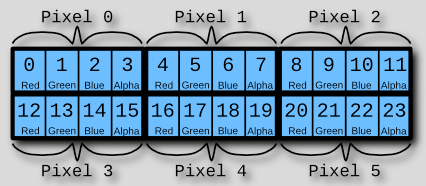

How an Image is Captured
make below image vertical

Light enters the camera through a lens. It is then focused onto the photo plane and recorded by an image sensor. The image sensor records the intensity of light that hits each sensor component, or photosite. Each photosite accumulates a charge from the incoming light based on the strength and duration of light exposure. (For example, brighter portions of an image result from higher-charged photosites than their dimmer companions). The accumulated charge is then trasferred to a storage area directly adjacent to the photosite. Analog-to-Digital conversion then occurs, as the accumulated charge magnitudes are translated to digital numerical data. The image is now simply a collection of numbers. [photo?]This data is passed through the in-camera image processor, where image compression into any variety of file formats can occur, as well as any in-camera adjustments, such as a light contrast tone curve. After processing, the image is saved to the camera storage device (for example, a memory card). This image data can be read from the memory card by a computer for later use.
Image Data and Manipulation
More on Image Processing
Rarely do we see images that are light data directly from the camera. Instead, image processing, or adjustments of these values, normally occurs. Every standard file type (png, jpeg, gif) is a compression of the original data. This has practical implications: A jpg image may be 3MB whereas the raw camera image is 43 MB. The more visually apparent examples of image processing come in image editing. These include: in-camera adjustments such as the (wand) on your iPhone, instagram, iPhoto and Photoshop. Once the image is recorded, the charge accumulated at each photosite is electrically transferred to a small storage area next to each photosite. From there, each stored charge magnitude is converted to a numerical representation by an analog-to-digital (A/D) conversion circuit. We now have our image data: numerical representations of light intensity.These values are then stored on a memory card, transferred to a computer, and/ or opened in an image editing program. Each photosite accumulates electric charge depending on the strength and duration of exposure to light. Brighter portions of an image result from higher-charged photosites than their dimmer companions. Digital and analog cameras alike create images by capturing light through an optical lens and then focusing it into an image on a picture plane.
When an image is recorded, RAW pixel data is captured by the sensor. This data must be synthesized and quantized. This is where image compression comes in. In order to simulate how our eyes process environmental light, cameras and editors alter image data. Image tones may be pulled into a certain range. A pleasing S-Curve may be applied to the image tones to increase contrast, for example. If a camera is not shooting in RAW, it must convert the image data. JPEG is the most widely used file format. Most cameras apply some sort of tone curve before JPEG compression.A tone curve is applied because a camera reads light data linearly, while the eye reads light logarithmically. The eye is more sensitive to lower light levels than to brighter levels. As a result, the in-camera tone curve often lightens the darks to bring out more detail, simulating the original scene seen by the eye.
Got it. Next!